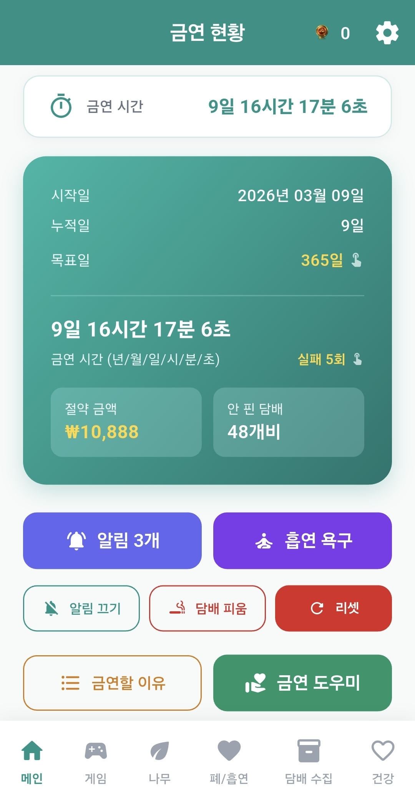
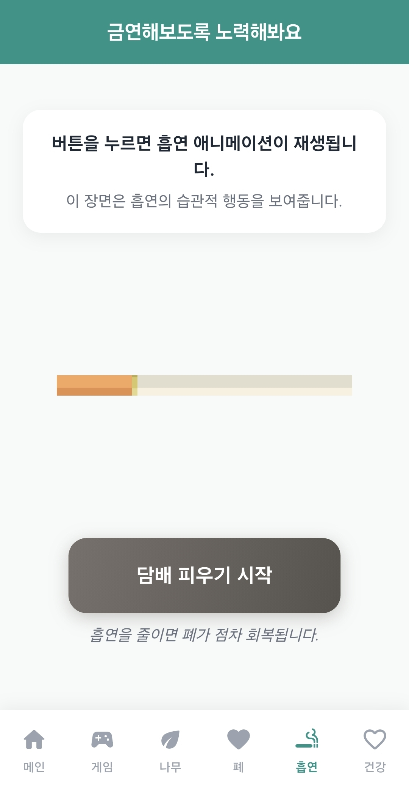
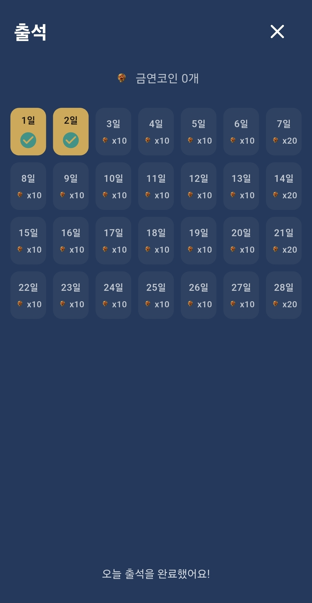
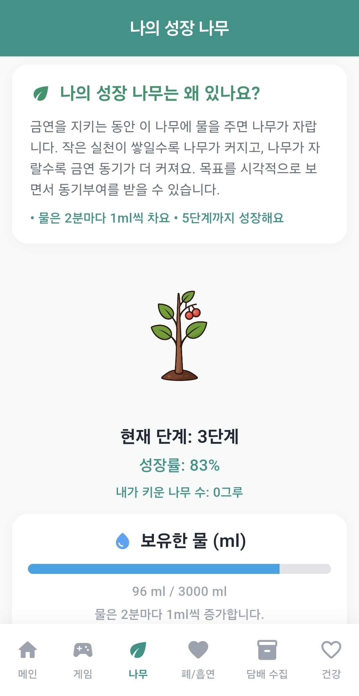
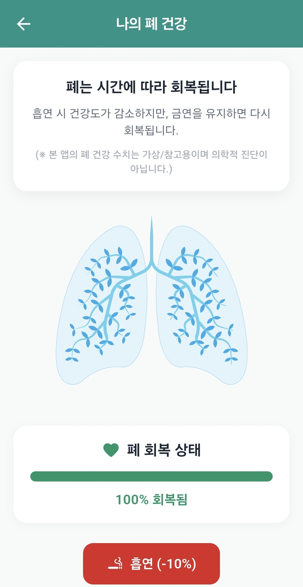
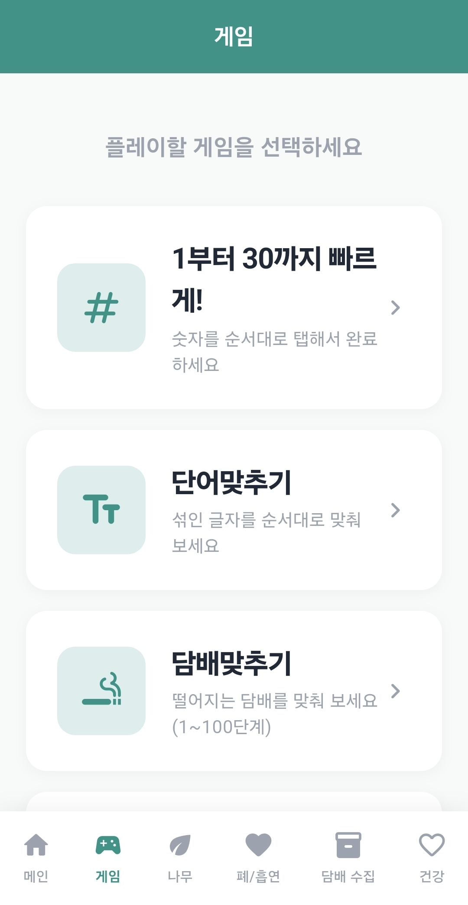
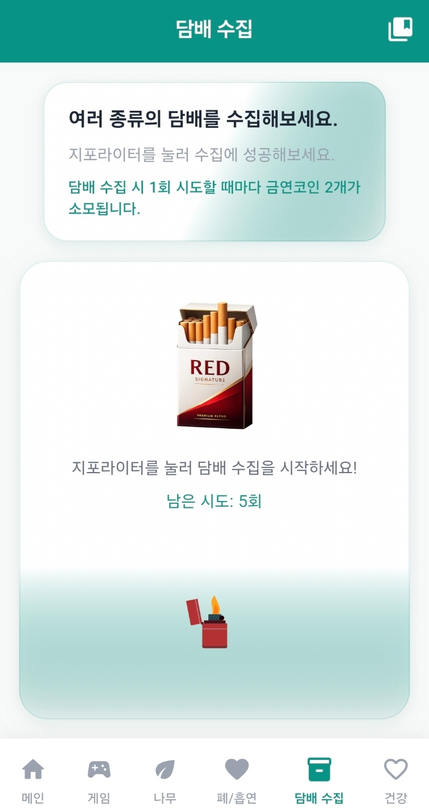
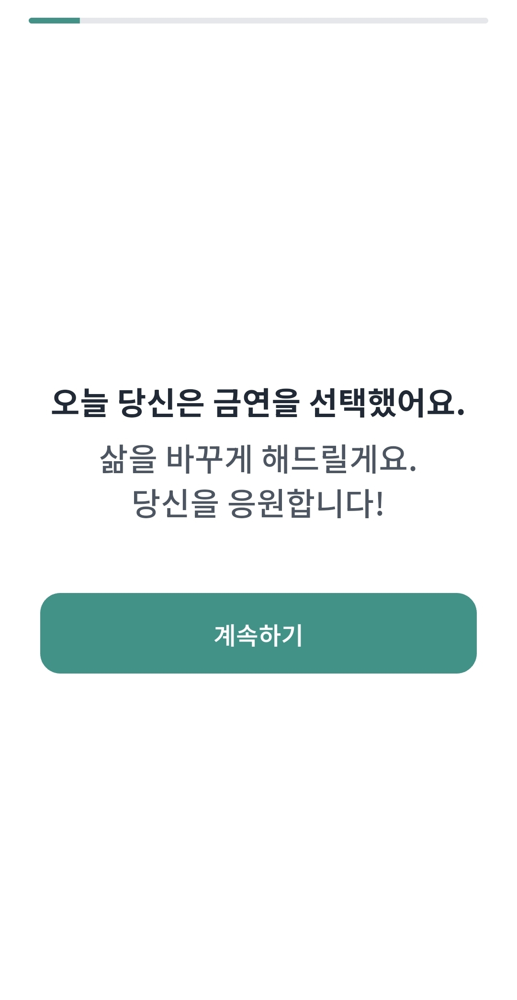

기존 금연 시도의 어려움
- 한 번의 흡연이 전체 실패처럼 느껴져 쉽게 포기하게 됩니다.
- 기록과 보상 체계가 없으면 동기 유지가 어렵습니다.
- 혼자 의지만으로 버티다 보면 재시도가 부담스러워집니다.
Android 금연 기록 앱
금연뱅크는 금연 시간, 절약 금액, 안 핀 담배 수를 한눈에 보여주고 출석체크, 금연코인, 알림, 게임 기능으로 매일의 금연 동기를 유지하도록 돕습니다.
현재 Android에서 이용 가능하며, 기록은 끊김 없이 이어서 관리할 수 있습니다.
오늘의 금연 현황
접근 방식
사용 방법
금연 시작일, 목표일, 하루 흡연량/가격 등 기본값을 입력합니다.
개인적인 금연 이유를 저장하고 알림 문구에 사용할 이유를 선택합니다.
원하는 시간대 리마인더와 출석체크를 통해 금연코인을 쌓아갑니다.
나무 성장, 폐 건강, 게임, 수집 등으로 동기를 이어갑니다.
핵심 기능
금연 시간, 절약 금액, 안 핀 담배 수, 실패 횟수를 실시간 확인합니다.
매일 출석 보상으로 코인을 얻고, 실패 횟수 차감 등에 활용할 수 있습니다.
리마인더, 금연 이유, 비접속, 출석, 수집 가능 시간 알림을 지원합니다.
금연 유지 과정이 시각적으로 보이도록 성장/회복 상태를 제공합니다.
숫자/단어/타이밍/담배맞추기 게임으로 스트레스 전환을 돕습니다.
앱을 열지 않아도 핵심 기록을 확인하고 조건 달성 시 뱃지를 획득합니다.
앱 화면 갤러리
핵심 금연 지표를 한눈에 확인합니다.

갈망 순간에 금연 이유와 성과를 다시 확인합니다.

출석 보상으로 금연코인을 꾸준히 획득합니다.

금연을 지킬수록 나무가 성장합니다.

회복 흐름과 변화 과정을 시각적으로 제공합니다.

짧은 게임으로 집중을 전환하고 동기를 유지합니다.

시간대별 수집 도전으로 재미 요소를 추가합니다.

사용자 입력 단계에서 개인 금연 목표를 구성합니다.

금연뱅크를 빠르게 실행할 수 있는 앱 아이콘입니다.
유지 로드맵
금연뱅크는 완벽한 하루보다 지속 가능한 하루를 목표로 설계되었습니다. 기록, 알림, 보상, 시각화 기능으로 다시 시작하기 쉬운 경험을 제공합니다.
FAQ
금연뱅크는 다시 시작하는 금연에 초점을 두고 있어 실패 횟수는 기록되지만 금연 시간은 유지됩니다.
출석체크로 획득하며 실패 횟수 차감, 수집/게임 이어하기 등 동기 기능에서 사용할 수 있습니다.
리마인더 알림, 금연 이유 알림, 비접속 알림, 출석 알림, 수집 가능 시간 알림을 지원합니다.
앱 기록은 사용자 경험이 끊기지 않도록 안정적으로 관리되며, 금연 여정을 계속 이어갈 수 있도록 제공됩니다.